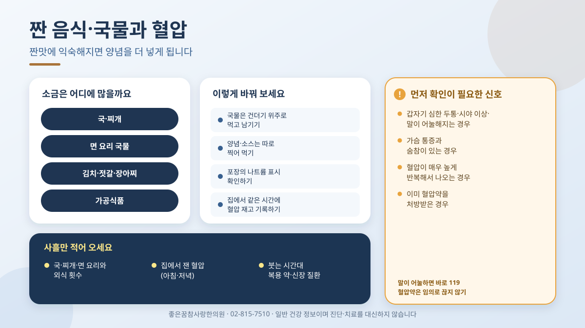

짠 음식과 국물, 가공식품을 자주 먹는 습관은 혈압과 관련될 수 있어 식사 모습을 일상의 말로 묻고 국물 남기기와 양념 줄이기 같은 현실적인 방법을 안내하며 혈압약은 임의로 중단하지 않습니다.
여쭙는 것
- 국, 찌개, 면 요리의 국물까지 드시나요?
- 외식과 배달 음식, 가공식품은 일주일에 얼마나 드시나요?
- 김치와 젓갈, 장아찌는 얼마나 드시나요?
생활에서 해 볼 것
- 국물은 건더기 위주로 먹고 남기기
- 양념과 소스는 부어 먹지 말고 따로 찍어 먹기
- 가공식품은 포장의 나트륨 표시 확인하기
한의원에서 함께 살필 것
- 식사 시간이 불규칙하고 짜고 자극적인 음식이 당기는 경우 식사 리듬과 식욕의 흐름을…
- 몸이 쉽게 붓고 아침에 얼굴이 무거운 경우 수분과 순환, 잠을 함께 살핍니다.
- 스트레스가 쌓이면 짜고 매운 음식을 찾는 경우 긴장과 식욕이 어떻게 이어지는지 함께…
먼저 확인이 필요한 신호
- 갑자기 심한 두통, 시야 이상, 말이 어눌해지는 경우
- 가슴 통증과 숨참이 있는 경우
- 혈압이 매우 높게 반복해서 나오는 경우

혈압이 걱정될 때 식사의 짠맛은 가장 먼저 살펴보는 부분 가운데 하나입니다. 국물과 김치, 외식과 배달 음식이 많은 식생활에서는 생각보다 소금을 많이 먹게 되기 쉽습니다. 하루아침에 바꾸기보다 국물 남기기처럼 한 가지씩 줄이는 방법을 찾습니다.
왜 이런 불편이 생길 수 있나요
- 소금을 많이 먹으면 몸에 수분이 늘어 혈압이 오르는 쪽으로 작용할 수 있는 것으로 알려져 있습니다.
- 국과 찌개, 면 요리의 국물, 김치와 젓갈, 가공식품에 소금이 많이 들어 있습니다.
- 짠맛에 익숙해지면 싱거운 음식이 맛없게 느껴져 양념을 더 넣게 됩니다.
- 술과 기름진 안주, 늦은 식사가 함께 있으면 혈압 관리가 더 어려워질 수 있습니다.

자주 하는 오해
- 싱겁게 먹으면 기운이 없다고 생각하시는 분이 많지만, 짠맛은 익숙함의 문제인 경우가 많아 천천히 줄이면 입맛도 따라 바뀝니다.
- 국물만 줄이면 된다고 생각하기 쉽지만, 김치와 젓갈, 가공식품, 배달 음식의 소스에도 소금이 많습니다.
- 저염 간장이나 소금을 쓰면 마음 놓고 많이 넣어도 된다고 여기기 쉽지만, 넣는 양 자체를 줄이는 것이 먼저입니다.
- 혈압약을 먹고 있으니 식사는 상관없다고 생각하기보다, 약과 생활 관리를 함께 가져가는 편이 좋습니다.
예를 들면 이런 경우입니다
- 예를 들어 점심을 거의 매일 국밥이나 찌개로 드시는 직장인이라면, 국물을 절반만 드시는 것과 김치 양을 정해 두는 것 가운데 하나를 먼저 골라 봅니다.
- 예를 들어 혼자 사시며 라면과 배달 음식이 잦은 분이라면, 라면 수프를 절반만 넣고 배달 음식의 소스를 따로 받는 것부터 시작합니다.
- 예를 들어 집밥은 싱겁게 드시는데 젓갈과 장아찌를 좋아하시는 어르신이라면, 한 끼에 짠 반찬을 한 가지만 두는 방법을 함께 정합니다.

먼저 이렇게 여쭙니다
- 국, 찌개, 면 요리의 국물까지 드시나요?
- 외식과 배달 음식, 가공식품은 일주일에 얼마나 드시나요?
- 김치와 젓갈, 장아찌는 얼마나 드시나요?
- 식사가 싱겁다고 느껴 소금이나 양념을 더 넣으시나요?
- 혈압은 집에서 재 보셨나요?
스스로 점검해 보세요
- 국, 찌개, 면 요리의 국물을 거의 다 마신다
- 외식이나 배달 음식이 일주일에 네 번 이상이다
- 음식을 맛보기 전에 소금이나 간장을 더 넣는다
- 라면, 햄, 소시지 같은 가공식품을 자주 먹는다
- 아침에 얼굴이나 손이 자주 붓는다
- 집에서 혈압을 재 본 적이 없다
해당하는 것이 많다면 소금을 어디에서 가장 많이 드시는지부터 찾아보시면 좋습니다. 진단을 대신하지는 않습니다.

일상에서 먼저 해 볼 수 있는 것
- 국물은 건더기 위주로 먹고 남기기
- 양념과 소스는 부어 먹지 말고 따로 찍어 먹기
- 가공식품은 포장의 나트륨 표시 확인하기
- 채소와 과일을 함께 늘리기(신장 질환이 있으면 의사와 상의)
- 집에서 같은 시간에 혈압을 재고 기록하기
- 찌개와 국은 작은 그릇에 덜어 먹어 국물 양을 눈으로 확인하기
- 라면은 수프를 절반만 넣고 채소나 달걀을 더해 먹기
한의원에서 함께 살필 수 있는 경우
- 식사 시간이 불규칙하고 짜고 자극적인 음식이 당기는 경우 식사 리듬과 식욕의 흐름을 함께 살핍니다.
- 몸이 쉽게 붓고 아침에 얼굴이 무거운 경우 수분과 순환, 잠을 함께 살핍니다.
- 스트레스가 쌓이면 짜고 매운 음식을 찾는 경우 긴장과 식욕이 어떻게 이어지는지 함께 살핍니다.
좋은꿈참사랑한의원에서는 하루 식사 모습과 집에서 잰 혈압 기록을 먼저 듣고, 진맥을 기본으로 하고 필요하다고 판단될 때 설진을 더해 몸 상태를 살핍니다. 그 뒤 실천할 수 있는 식사 계획과 침·한약 상담 등을 상태에 맞춰 정하고, 혈압 진단과 약은 내과에서 받도록 안내합니다.
첫 방문에는 하루 식사 모습과 집에서 잰 혈압 기록을 먼저 보고, 진료실에서도 혈압과 맥박을 다시 잽니다. 필요하다고 판단되면 인바디 770으로 체성분과 체수분 흐름을 함께 기록해 둡니다. 다시 오시면 지난번에 정한 한 가지가 지켜졌는지부터 이어서 여쭙고, 다음 한 가지를 더합니다.

얼마나 지켜보고, 언제 상담하면 좋을까요
- 집에서 잰 혈압은 하루 한두 번, 같은 시간에 1~2주 기록하면 흐름을 보기 좋습니다.
- 국물 남기기 같은 식사 변화는 2~3주쯤 지나면 싱거운 맛에 조금씩 익숙해지는 분이 많습니다. 처음 며칠이 가장 어렵습니다.
- 집에서 잰 혈압이 계속 높게 나오거나 처음 높다는 말을 들었다면 내과 진료를 먼저 받으세요.
- 혈압약을 드시는 중이라면 식사를 바꾸더라도 약은 처방한 의사와 상의 없이 줄이지 않습니다.
이렇게 기록해 오시면 상담이 쉬워집니다
- 사흘 동안 먹은 국·찌개·면 요리와 외식 횟수
- 집에서 잰 혈압(아침·저녁)
- 붓기가 있는 시간대
- 복용 중인 약과 신장 질환 여부

이런 증상은 먼저 확인이 필요합니다
- 갑자기 심한 두통, 시야 이상, 말이 어눌해지는 경우
- 가슴 통증과 숨참이 있는 경우
- 혈압이 매우 높게 반복해서 나오는 경우
- 이미 혈압약을 처방받은 경우
말이 어눌해지거나 한쪽 팔다리에 힘이 빠지면 즉시 응급실로 가세요. 혈압약은 처방한 의사와 상의 없이 줄이거나 끊지 않습니다.
함께 읽으면 좋은 글
- 혈압이 높다는 말을 듣고 동네 언덕길 걷기를 시작하려 할 때
- 건강검진 결과지에서 대사증후군은 어떤 항목을 보나요?
- 편의점 도시락·라면으로 끼니를 때우는 날이 많을 때
한눈에 보는 표
| 구분 | 핵심 |
|---|---|
| 여쭙는 것 | 국, 찌개, 면 요리의 국물까지 드시나요? 외식과 배달 음식, 가공식품은 일주일에 얼마나 드시나요? |
| 생활에서 해 볼 것 | 국물은 건더기 위주로 먹고 남기기 양념과 소스는 부어 먹지 말고 따로 찍어 먹기 |
| 한의원에서 함께 살필 것 | 식사 시간이 불규칙하고 짜고 자극적인 음식이 당기는 경우 식사 리듬과 식욕의 흐름을 함께 살핍니다. 몸이 쉽게 붓고 아침에 얼굴이 무거운 경우 수분과 순환, 잠을 함께 살핍니다. |
| 먼저 확인이 필요한 신호 | 갑자기 심한 두통, 시야 이상, 말이 어눌해지는 경우 가슴 통증과 숨참이 있는 경우 |
자주 묻는 질문
혈압이 높으면 소금을 완전히 끊어야 하나요?
완전히 끊기보다 조금씩 줄이는 방법을 정합니다. 신장 질환 등 지병이 있다면 의사와 상의하세요.
싱겁게 먹으면 맛이 없어요.
식초, 레몬, 들기름, 허브처럼 짠맛 대신 풍미를 더하는 방법을 쓰면 적응이 쉬워집니다.
혈압약을 줄여도 되나요?
약은 임의로 끊거나 줄이지 말고 처방한 의사와 상의하세요.
붓기가 있으면 물을 덜 마셔야 하나요?
붓기의 원인은 여러 가지라 물을 무조건 줄이기보다 짠 음식, 잠, 활동량을 먼저 살핍니다. 심장이나 신장 질환이 있다면 담당 의사의 안내를 따르세요.
이 글은 일반적인 건강 정보이며 개인의 진단이나 치료를 대신하지 않습니다. 증상이 있거나 복용 중인 약이 있다면 진료를 통해 확인하세요. 치료 효과는 개인마다 다를 수 있습니다.
작성 기준: 일반적으로 알려져 있는 건강 정보를 참고해 정리했습니다(대표원장 감수). 증상 기록은 1~2주 동안 하루 1회, 비슷한 시간에 적어 오시면 지난 상태와 비교하기 쉽습니다.
좋은꿈참사랑한의원은 재진 때 지난번 이야기부터 이어서 여쭙니다. 진료시간과 예약은 오시는 길에서 확인하세요.
어디서 상담받을 수 있나요?
좋은꿈참사랑한의원은 서울 동작구 만양로2길 2 신성빌딩 3층·5층(서울 동작구 상도동, 7호선 상도역 3번 출구 근처)에 있습니다. 한의사 3명(이종호 대표원장, 조영기 수석진료원장, 정원영 진료원장)이 진료합니다. 진료시간은 평일 09:30~20:00(점심 13:00~14:00), 토·일·공휴일 09:30~15:00이며, 방문 전 전화로 확인을 권합니다. 예약은 네이버 예약, 카카오톡 상담, 전화 02-815-7510로 받습니다.